Voz do Ser
Programa Liderança com Propósito
Comunicação, saúde mental, relacionamentos e inteligência relacional para as lideranças da Highstil.
Role para ver
Comunicação, saúde mental, relacionamentos e inteligência relacional para as lideranças da Highstil.
Role para verO Programa Liderança com Propósito, desenhado para as lideranças da Highstil, tem o objetivo de desenvolver habilidades essenciais para uma liderança que valoriza comunicação, saúde mental, relacionamentos, inteligência emocional e inteligência relacional.
Com uma abordagem prática e aplicada aos desafios reais da liderança, o programa promove autoconhecimento, fortalece a comunicação e amplia a capacidade de engajar, desenvolver e se relacionar com diferentes perfis de pessoas.
Para que o programa possa se adequar ao momento, às necessidades e à profundidade de desenvolvimento desejada pela empresa, estruturamos quatro estratégias de implementação: PP, P, M e G. Cada uma propõe um nível diferente de aprofundamento e acompanhamento.
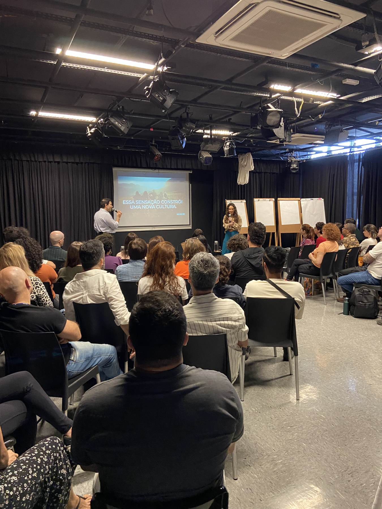
15 mentorias de 2 horas cada, uma com cada líder de líderes
Os encontros usam como base a metodologia da Terapia da Comunicação e são espaços de escuta, avaliação e desenvolvimento individual, conduzidos por dois Terapeutas da Comunicação em cada sessão.
Cada mentoria é desenhada a partir do momento e dos desafios do líder, com devolutiva e direcionamentos práticos para o seu dia a dia.
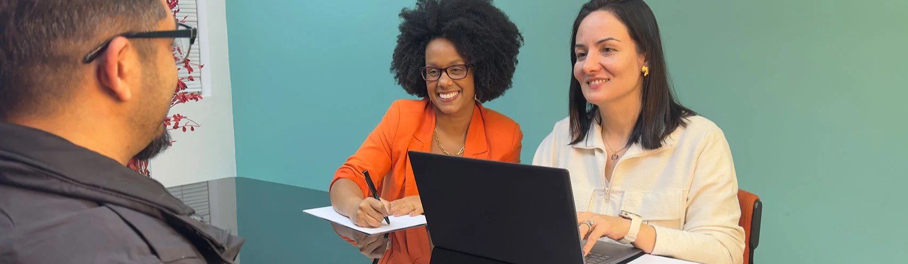
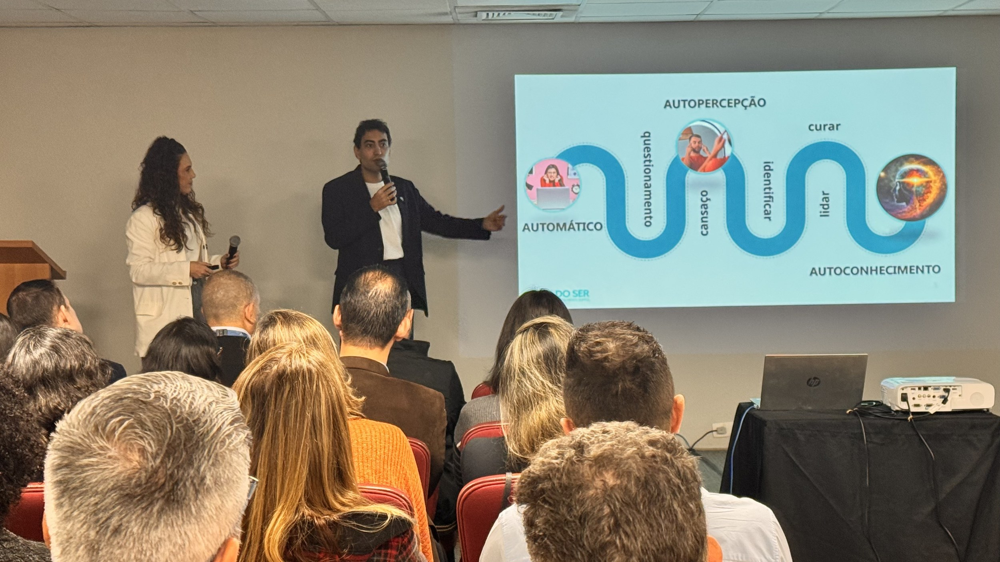
Experiência imersiva de 4 horas · 15 líderes
Uma experiência imersiva desenvolvida para os 15 líderes, unindo conteúdo, prática, reflexão e simulações de situações reais de liderança.
O workshop poderá ser realizado in company, nas instalações da Highstil, ou no Espaço Voz do Ser. No Espaço Voz do Ser, a experiência é especialmente preparada para receber as lideranças, com café da manhã, intervenções musicais, sala, som e toda a estrutura e o suporte do espaço para que o encontro aconteça.
Seis encontros presenciais de até 2 horas, a cada dois meses, ao longo de um ano, para 50 participantes
Após o workshop, inicia-se um processo de acompanhamento e desenvolvimento contínuo. Cada encontro é dedicado a uma temática importante para o exercício da liderança, conduzido por uma dupla de Terapeutas da Comunicação especializados, combinando uma parte expositiva e prática com um espaço de mentoria coletiva, no qual os líderes trazem dúvidas, desafios e situações reais do dia a dia.
Garantir que os aprendizados sejam revisitados, aprofundados e aplicados à realidade da liderança, com acompanhamento ao longo de todo o ano.

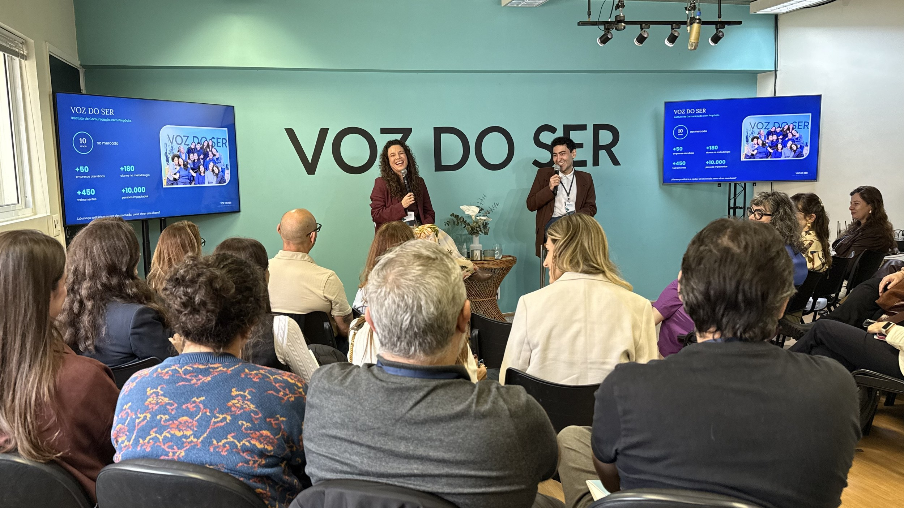
Cada estratégia combina as etapas de um jeito diferente, permitindo que a Highstil escolha o formato que melhor responde aos seus desafios atuais e aos objetivos com as lideranças.
As mentorias individuais e os treinamentos bimestrais acontecem sempre na Highstil. A única etapa com escolha de local é o workshop de 4 horas, que pode ser realizado in company ou no Espaço Voz do Ser.
No Espaço Voz do Ser, o workshop inclui o café da manhã para os 15 líderes, além da sala, do som, de toda a estrutura do espaço e do suporte necessário para que o encontro aconteça.
Os valores das estratégias P, M e G já estão com o desconto aplicado ao conjunto.
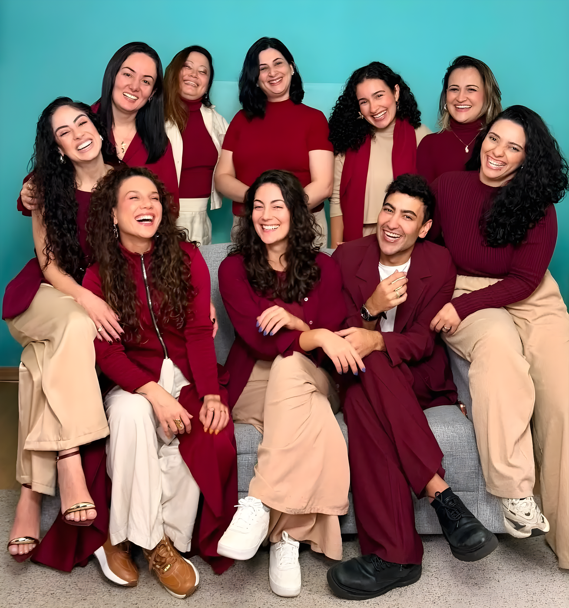
O Voz do Ser é um Instituto de Comunicação com Propósito, autoconhecimento e mudança de mentalidade. Atuamos nas áreas clínica, organizacional e educacional, oferecendo terapias, cursos e treinamentos em comunicação, inteligência emocional e desenvolvimento pessoal.
Nossa abordagem une ciência, prática e espiritualidade, para promover transformação de relacionamentos e expansão consciencial.
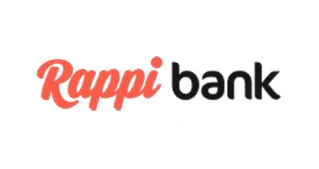

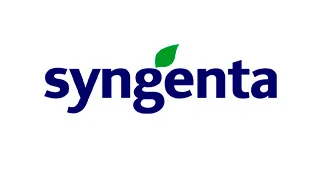


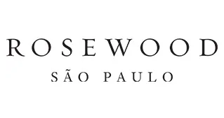


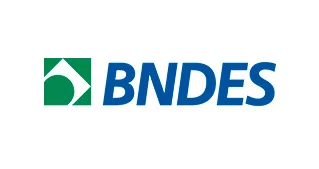


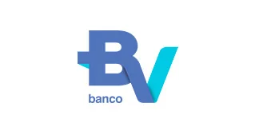


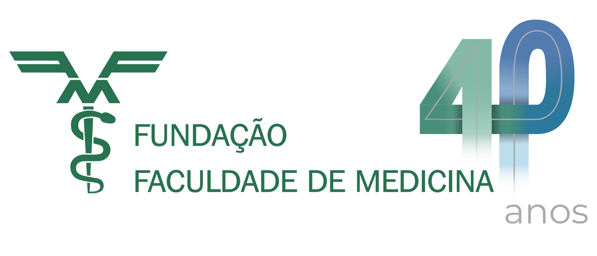
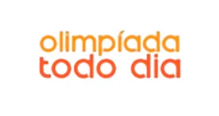
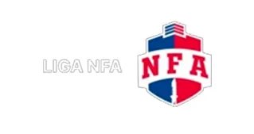
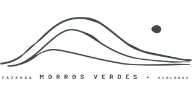

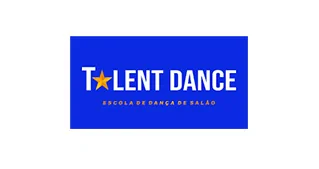


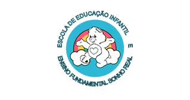


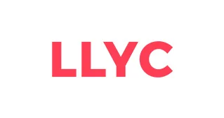


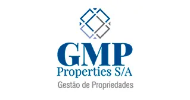


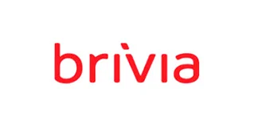


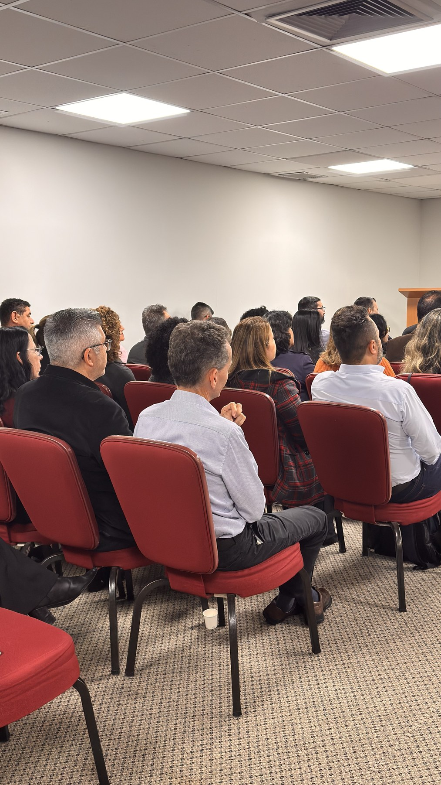
Estamos à disposição para detalhar a estratégia que fizer mais sentido para a Highstil e alinhar as datas.